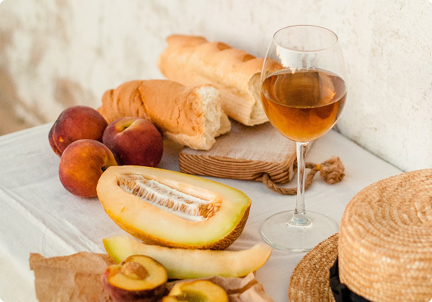
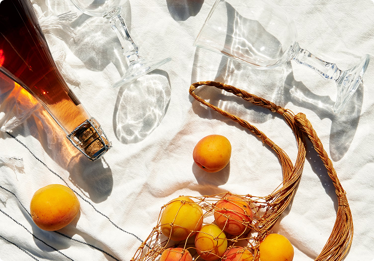

Pequenas escolhas para uma vida mais saudável
Descubra como mudanças simples na alimentação podem tornar sua rotina mais equilibrada e prazerosa.

Uma rotina mais natural
Cuidar da alimentação não precisa ser complicado, nem exige mudanças radicais de um dia para o outro. Muitas vezes, são as pequenas escolhas que fazemos diariamente que ajudam a construir uma rotina mais equilibrada. Começar o dia com frutas, variar os alimentos e reservar um momento para preparar uma refeição são maneiras simples de prestar mais atenção ao que você come. Além de trazer variedade para o prato, esses hábitos podem transformar a maneira como você enxerga a alimentação. Uma rotina natural também envolve respeitar seu próprio ritmo. Não é necessário seguir uma lista rígida de regras ou buscar a perfeição em todas as refeições. O importante é encontrar alternativas que façam sentido para sua realidade.



Comece pelo básico
Você não precisa mudar tudo de uma vez. Experimente incluir mais frutas e verduras nas refeições, beber água ao longo do dia e buscar opções variadas para o café da manhã. Pequenas mudanças podem ser mais fáceis de manter quando se tornam parte da rotina. Uma boa ideia é deixar frutas acessíveis, planejar algumas refeições com antecedência e experimentar ingredientes que você ainda não conhece. Essas atitudes ajudam a trazer mais variedade para o dia a dia sem tornar a alimentação uma tarefa complicada. Também vale lembrar que uma alimentação equilibrada não precisa ser sem graça. Combinar cores, texturas e sabores pode deixar cada refeição mais interessante e tornar o momento de comer ainda mais agradável.
Encontre equilíbrio sem abrir mão do prazer
Ter uma alimentação equilibrada não significa deixar de aproveitar os alimentos de que você gosta. O equilíbrio está na variedade, na frequência das escolhas e na construção de hábitos que possam ser mantidos ao longo do tempo. Alguns dias serão mais organizados do que outros, e isso faz parte da vida. Em vez de buscar uma rotina perfeita, procure fazer escolhas conscientes sempre que possível, sem transformar a alimentação em motivo de cobrança. Cada refeição é uma nova oportunidade para experimentar, aprender e cuidar de você. Pequenos passos, repetidos com consistência, podem ajudar a criar uma relação mais tranquila e positiva com a comida.
Um passo de cada vez
Começar pode ser mais simples do que parece. Escolha um hábito para experimentar nesta semana: adicionar uma fruta ao café da manhã, preparar uma refeição em casa ou variar os vegetais do almoço. Observe o que funciona melhor para você e adapte as ideias à sua rotina. Não existe uma única maneira de viver de forma natural; o caminho é encontrar escolhas que sejam práticas, agradáveis e possíveis de manter. Uma vida mais natural não exige perfeição. Ela começa com pequenas atitudes, feitas no seu tempo, que ajudam a tornar o cotidiano mais consciente e prazeroso.